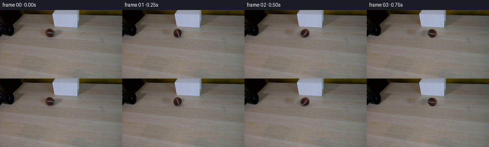
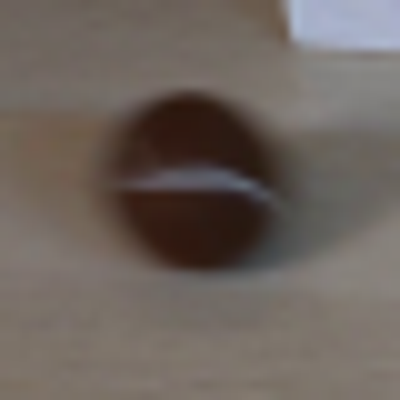
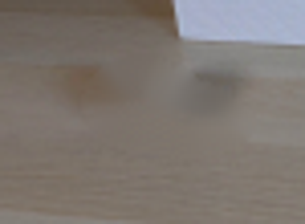
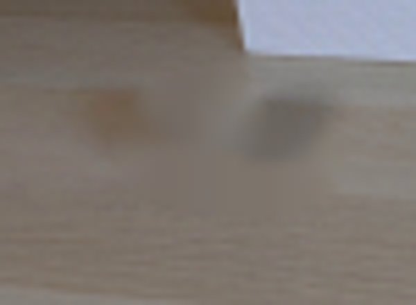
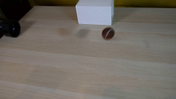
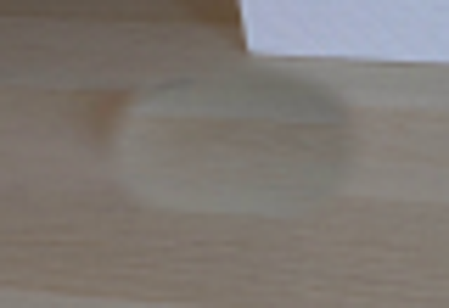
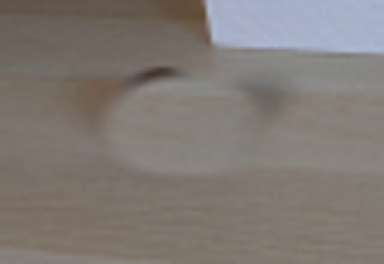
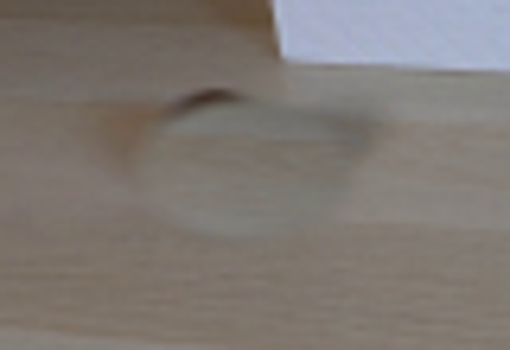
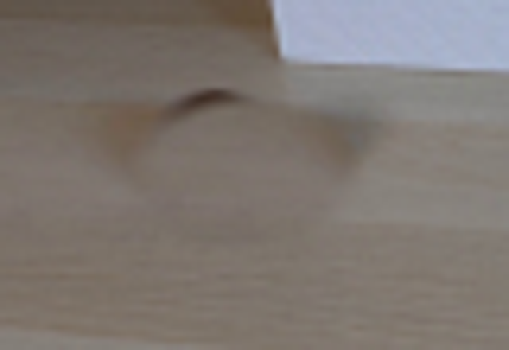
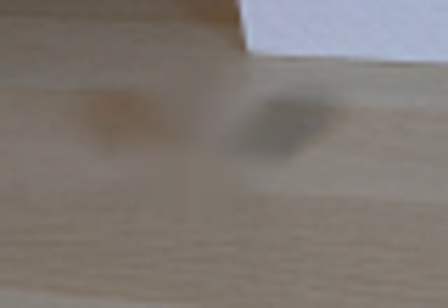

CODING AGENTS AS PIXEL WORLD MODELS
traex/GPT-5.6-Sol · 0150
点击播放 · 原生 RGB 像素
逐轮保存的候选
回放视频、检查图与代码变化。
每份候选均可单独播放。实际图片检查记录在下方工具轨迹中。
候选 01播放与检查图
点击播放 · 原生 RGB 像素


展开代码变化
--- 上一保存版本
+++ 本次保存版本
@@ -0,0 +1,124 @@
+"""Generate the requested locked-camera rolling-ball demonstration.
+
+The supplied photograph is retained as the plate. The one moving object is
+lifted from that photograph, its vacated area is reconstructed from nearby
+wood texture, and the ball is rotated/translated using analytic rolling
+motion. No assets beyond first_frame.png are used.
+"""
+from pathlib import Path
+import cv2
+import numpy as np
+from PIL import Image
+import artifact_io
+
+CASE_DIR = Path(__file__).resolve().parent
+
+
+def smoothstep(edge0, edge1, x):
+ u = np.clip((x - edge0) / (edge1 - edge0), 0.0, 1.0)
+ return u * u * (3.0 - 2.0 * u)
+
+
+def clean_plate(rgb):
+ """Remove the original ball and its soft contact shadow from the plate."""
+ bgr = cv2.cvtColor(rgb, cv2.COLOR_RGB2BGR)
+ mask = np.zeros(rgb.shape[:2], np.uint8)
+ # The first ellipse covers the sphere; the second covers its right/down cast
+ # shadow. A soft scientific-demo photograph benefits from NS inpainting,
+ # which follows the table's long horizontal grain.
+ cv2.ellipse(mask, (104, 49), (12, 12), 0, 0, 360, 255, -1)
+ cv2.ellipse(mask, (116, 55), (16, 7), 0, 0, 360, 255, -1)
+ mask = cv2.dilate(mask, np.ones((3, 3), np.uint8), iterations=1)
+ repaired = cv2.inpaint(bgr, mask, 5, cv2.INPAINT_NS)
+ return cv2.cvtColor(repaired, cv2.COLOR_BGR2RGB)
+
+
+def source_ball_rgba(rgb):
+ """Lift the photographed ball into a compact premultiplied RGBA sprite."""
+ cx, cy = 104.0, 48.5
+ half = 15
+ x0, y0 = int(cx) - half, int(round(cy)) - half
+ crop = rgb[y0:y0 + 2 * half + 1, x0:x0 + 2 * half + 1].astype(np.float32)
+ yy, xx = np.mgrid[0:crop.shape[0], 0:crop.shape[1]]
+ # The photographed sphere has a very soft optical edge. Keep the center
+ # opaque, then feather only its outermost pixel. A tiny downward elongation
+ # captures its soft lower rim without carrying the old cast shadow.
+ px = xx - (cx - x0)
+ py = yy - (cy - y0)
+ rho = np.sqrt((px / 10.6) ** 2 + (py / 9.7) ** 2)
+ alpha = 1.0 - smoothstep(0.86, 1.08, rho)
+ alpha = cv2.GaussianBlur(alpha.astype(np.float32), (0, 0), 0.35)
+ alpha = np.clip(alpha, 0, 1)
+ rgba = np.dstack([crop * alpha[..., None], alpha])
+ return rgba, (cx - x0, cy - y0)
+
+
+def warp_ball(sprite, pivot, frame_shape, center, angle_deg):
+ """Rotate a premultiplied sprite and place it at a subpixel center."""
+ h, w = frame_shape[:2]
+ sh, sw = sprite.shape[:2]
+ # One affine operation avoids repeated interpolation. Coordinates map the
+ # local photographic center onto the desired location while rotating it.
+ a = np.deg2rad(angle_deg)
+ c, s = np.cos(a), np.sin(a)
+ px, py = pivot
+ M = np.array([[c, s, center[0] - c * px - s * py],
+ [-s, c, center[1] + s * px - c * py]], dtype=np.float32)
+ out = cv2.warpAffine(sprite, M, (w, h), flags=cv2.INTER_CUBIC,
+ borderMode=cv2.BORDER_CONSTANT, borderValue=0)
+ out[..., 3] = np.clip(out[..., 3], 0, 1)
+ out[..., :3] = np.clip(out[..., :3], 0, 255)
+ return out
+
+
+def add_shadow(frame, center, visibility=1.0):
+ """Apply a soft contact/cast shadow to the tabletop."""
+ h, w = frame.shape[:2]
+ yy, xx = np.mgrid[0:h, 0:w].astype(np.float32)
+ # Tight contact core plus a faint, right-going penumbra, matching the lamp
+ # direction and the shadow already visible in frame zero.
+ core = np.exp(-0.5 * (((xx - (center[0] + 1.8)) / 7.3) ** 2 +
+ ((yy - (center[1] + 7.6)) / 2.25) ** 2))
+ cast = np.exp(-0.5 * (((xx - (center[0] + 8.0)) / 11.0) ** 2 +
+ ((yy - (center[1] + 7.1)) / 3.15) ** 2))
+ opacity = np.clip((0.19 * core + 0.105 * cast) * visibility, 0, 0.34)
+ # Warm-neutral shadow rather than synthetic pure black.
+ tint = np.array([40.0, 35.0, 31.0], np.float32)
+ return frame * (1.0 - opacity[..., None]) + tint * opacity[..., None]
+
+
+def generate():
+ first = np.array(Image.open(CASE_DIR / "first_frame.png").convert("RGB"), dtype=np.uint8)
+ assert first.shape == (144, 256, 3)
+ plate = clean_plate(first)
+ sprite, pivot = source_ball_rgba(first)
+
+ frames = [first.copy()]
+ radius = 10.15
+ for i in range(1, 20):
+ t = i / 4.0
+ # Real-time rolling under mild rolling resistance: 45 px/s initially,
+ # slowing by 4 px/s each second. It traverses the visible tabletop and
+ # clears the right edge naturally during the final half-second.
+ distance = 45.0 * t - 2.0 * t * t
+ center = (104.0 + distance, 48.5)
+ # No slip: angular displacement equals traveled distance / radius.
+ angle = -np.degrees(distance / radius)
+
+ frame = plate.astype(np.float32)
+ # Fade only by geometric offscreen coverage, not by an artificial edit.
+ frame = add_shadow(frame, center)
+ layer = warp_ball(sprite, pivot, first.shape, center, angle)
+ a = layer[..., 3:4]
+ frame = layer[..., :3] + frame * (1.0 - a)
+ frames.append(np.clip(np.rint(frame), 0, 255).astype(np.uint8))
+
+ frames = np.stack(frames, axis=0)
+ assert frames.shape == (20, 144, 256, 3) and frames.dtype == np.uint8
+ assert np.array_equal(frames[0], first)
+ artifact_io.save(frames, CASE_DIR)
+ return frames
+
+
+if __name__ == "__main__":
+ generate()
候选 02播放与检查图
点击播放 · 原生 RGB 像素
展开代码变化
--- 上一保存版本
+++ 本次保存版本
@@ -26,10 +26,8 @@
# The first ellipse covers the sphere; the second covers its right/down cast
# shadow. A soft scientific-demo photograph benefits from NS inpainting,
# which follows the table's long horizontal grain.
- cv2.ellipse(mask, (104, 49), (12, 12), 0, 0, 360, 255, -1)
- cv2.ellipse(mask, (116, 55), (16, 7), 0, 0, 360, 255, -1)
- mask = cv2.dilate(mask, np.ones((3, 3), np.uint8), iterations=1)
- repaired = cv2.inpaint(bgr, mask, 5, cv2.INPAINT_NS)
+ cv2.ellipse(mask, (110, 51), (22, 15), 0, 0, 360, 255, -1)
+ repaired = cv2.inpaint(bgr, mask, 6, cv2.INPAINT_NS)
return cv2.cvtColor(repaired, cv2.COLOR_BGR2RGB)
候选 03播放与检查图
可观测工具轨迹
实际执行的命令与返回图片。
命令 1exit 0
/bin/bash -lc "cat prompt.txt && printf '\\n---RULES---\\n' && cat GENERATION_RULES.md"
命令 2exit 0
/bin/bash -lc "find . -maxdepth 2 -type f -printf '%p %s bytes\\n' | sort"
命令 3exit 0
/bin/bash -lc "python - <<'PY'
from PIL import Image
im=Image.open('first_frame.png')
im.crop((85,30,125,70)).resize((400,400)).save('.tmp/ball_zoom.png')
PY"命令 4exit 0
/bin/bash -lc "sed -n '1,240p' artifact_io.py && python - <<'PY'
import cv2
im=cv2.imread('first_frame.png')
print(im.shape, im.dtype)
PY"命令 5exit 0
/bin/bash -lc "cat > .tmp/test_bg.py <<'PY'
import cv2, numpy as np
from PIL import Image
im=cv2.imread('first_frame.png')
mask=np.zeros(im.shape[:2],np.uint8)
cv2.ellipse(mask,(105,50),(15,12),0,0,360,255,-1)
cv2.ellipse(mask,(116,54),(16,9),0,0,360,255,-1)
for meth,name in [(cv2.INPAINT_TELEA,'telea'),(cv2.INPAINT_NS,'ns')]:
out=cv2.inpaint(im,mask,5,meth)
cv2.imwrite(f'.tmp/bg_{name}.png',out)
Image.open(f'.tmp/bg_{name}.png').crop((70,25,145,80)).resize((600,440)).save(f'.tmp/bg_{name}_zoom.png')
PY
python .tmp/test_bg.py"命令 6exit 0
/bin/bash -lc "cat > generate.py <<'PY'
\"\"\"Generate the requested locked-camera rolling-ball demonstration.
The supplied photograph is retained as the plate. The one moving object is
lifted from that photograph, its vacated area is reconstructed from nearby
wood texture, and the ball is rotated/translated using analytic rolling
motion. No assets beyond first_frame.png are used.
\"\"\"
from pathlib import Path
import cv2
import numpy as np
from PIL import Image
import artifact_io
CASE_DIR = Path(__file__).resolve().parent
def smoothstep(edge0, edge1, x):
u = np.clip((x - edge0) / (edge1 - edge0), 0.0, 1.0)
return u * u * (3.0 - 2.0 * u)
def clean_plate(rgb):
\"\"\"Remove the original ball and its soft contact shadow from the plate.\"\"\"
bgr = cv2.cvtColor(rgb, cv2.COLOR_RGB2BGR)
mask = np.zeros(rgb.shape[:2], np.uint8)
# The first ellipse covers the sphere; the second covers its right/down cast
# shadow. A soft scientific-demo photograph benefits from NS inpainting,
# which follows the table's long horizontal grain.
cv2.ellipse(mask, (104, 49), (12, 12), 0, 0, 360, 255, -1)
cv2.ellipse(mask, (116, 55), (16, 7), 0, 0, 360, 255, -1)
mask = cv2.dilate(mask, np.ones((3, 3), np.uint8), iterations=1)
repaired = cv2.inpaint(bgr, mask, 5, cv2.INPAINT_NS)
return cv2.cvtColor(repaired, cv2.COLOR_BGR2RGB)
def source_ball_rgba(rgb):
\"\"\"Lift the photographed ball into a compact premultiplied RGBA sprite.\"\"\"
cx, cy = 104.0, 48.5
half = 15
x0, y0 = int(cx) - half, int(round(cy)) - half
crop = rgb[y0:y0 + 2 * half + 1, x0:x0 + 2 * half + 1].astype(np.float32)
yy, xx = np.mgrid[0:crop.shape[0], 0:crop.shape[1]]
# The photographed sphere has a very soft optical edge. Keep the center
# opaque, then feather only its outermost pixel. A tiny downward elongation
# captures its soft lower rim without carrying the old cast shadow.
px = xx - (cx - x0)
py = yy - (cy - y0)
rho = np.sqrt((px / 10.6) ** 2 + (py / 9.7) ** 2)
alpha = 1.0 - smoothstep(0.86, 1.08, rho)
alpha = cv2.GaussianBlur(alpha.astype(np.float32), (0, 0), 0.35)
alpha = np.clip(alpha, 0, 1)
rgba = np.dstack([crop * alpha[..., None], alpha])
return rgba, (cx - x0, cy - y0)
def warp_ball(sprite, pivot, frame_shape, center, angle_deg):
\"\"\"Rotate a premultiplied sprite and place it at a subpixel center.\"\"\"
h, w = frame_shape[:2]
sh, sw = sprite.shape[:2]
# One affine operation avoids repeated interpolation. Coordinates map the
# local photographic center onto the desired location while rotating it.
a = np.deg2rad(angle_deg)
c, s = np.cos(a), np.sin(a)
px, py = pivot
M = np.array([[c, s, center[0] - c * px - s * py],
[-s, c, center[1] + s * px - c * py]], dtype=np.float32)
out = cv2.warpAffine(sprite, M, (w, h), flags=cv2.INTER_CUBIC,
borderMode=cv2.BORDER_CONSTANT, borderValue=0)
out[..., 3] = np.clip(out[..., 3], 0, 1)
out[..., :3] = np.clip(out[..., :3], 0, 255)
return out
def add_shadow(frame, center, visibility=1.0):
\"\"\"Apply a soft contact/cast shadow to the tabletop.\"\"\"
h, w = frame.shape[:2]
yy, xx = np.mgrid[0:h, 0:w].astype(np.float32)
# Tight contact core plus a faint, right-going penumbra, matching the lamp
# direction and the shadow already visible in frame zero.
core = np.exp(-0.5 * (((xx - (center[0] + 1.8)) / 7.3) ** 2 +
((yy - (center[1] + 7.6)) / 2.25) ** 2))
cast = np.exp(-0.5 * (((xx - (center[0] + 8.0)) / 11.0) ** 2 +
((yy - (center[1] + 7.1)) / 3.15) ** 2))
opacity = np.clip((0.19 * core + 0.105 * cast) * visibility, 0, 0.34)
# Warm-neutral shadow rather than synthetic pure black.
tint = np.array([40.0, 35.0, 31.0], np.float32)
return frame * (1.0 - opacity[..., None]) + tint * opacity[..., None]
def generate():
first = np.array(Image.open(CASE_DIR / \"first_frame.png\").convert(\"RGB\"), dtype=np.uint8)
assert first.shape == (144, 256, 3)
plate = clean_plate(first)
sprite, pivot = source_ball_rgba(first)
frames = [first.copy()]
radius = 10.15
for i in range(1, 20):
t = i / 4.0
# Real-time rolling under mild rolling resistance: 45 px/s initially,
# slowing by 4 px/s each second. It traverses the visible tabletop and
# clears the right edge naturally during the final half-second.
distance = 45.0 * t - 2.0 * t * t
center = (104.0 + distance, 48.5)
# No slip: angular displacement equals traveled distance / radius.
angle = -np.degrees(distance / radius)
frame = plate.astype(np.float32)
# Fade only by geometric offscreen coverage, not by an artificial edit.
frame = add_shadow(frame, center)
layer = warp_ball(sprite, pivot, first.shape, center, angle)
a = layer[..., 3:4]
frame = layer[..., :3] + frame * (1.0 - a)
frames.append(np.clip(np.rint(frame), 0, 255).astype(np.uint8))
frames = np.stack(frames, axis=0)
assert frames.shape == (20, 144, 256, 3) and frames.dtype == np.uint8
assert np.array_equal(frames[0], first)
artifact_io.save(frames, CASE_DIR)
return frames
if __name__ == \"__main__\":
generate()
PY
python generate.py"命令 7exit 0
/bin/bash -lc "python - <<'PY'
from PIL import Image
import cv2,numpy as np
im=cv2.cvtColor(cv2.imread('first_frame.png'),cv2.COLOR_BGR2RGB)
# variant copied texture
out=im.astype(float)
yy,xx=np.mgrid[0:144,0:256]
# source shift +66
src=np.roll(im,-66,axis=1).astype(float)
r=np.sqrt(((xx-111)/25)**2+((yy-51)/17)**2)
a=np.clip((1-r)/.28,0,1); a=a*a*(3-2*a)
out=out*(1-a[...,None])+src*a[...,None]
out=np.uint8(np.clip(out,0,255))
Image.fromarray(out).save('.tmp/bgcopy.png')
Image.fromarray(out).crop((70,25,150,80)).resize((640,440)).save('.tmp/bgcopyzoom.png')
PY"命令 8exit 0
/bin/bash -lc "python - <<'PY'
from PIL import Image
import cv2,numpy as np
im=cv2.cvtColor(cv2.imread('first_frame.png'),cv2.COLOR_BGR2RGB)
out=im.astype(float)
yy,xx=np.mgrid[0:144,0:256]
for shift,name in [(40,'40'),(75,'75'),(-35,'m35')]:
src=np.roll(im,-shift,axis=1).astype(float)
r=np.sqrt(((xx-108)/20)**2+((yy-51)/13)**2)
a=np.clip((1-r)/.3,0,1); a=a*a*(3-2*a)
o=np.uint8(np.clip(out*(1-a[...,None])+src*a[...,None],0,255))
Image.fromarray(o).crop((70,25,150,80)).resize((640,440)).save('.tmp/c'+name+'.png')
PY"命令 9exit 0
/bin/bash -lc "python - <<'PY'
import cv2
from PIL import Image
im=cv2.imread('first_frame.png')
for j,(cx,cy,ax,ay,r) in enumerate([(110,51,22,15,6),(108,50,18,14,7),(105,50,15,13,6)]):
m=im[:,:,0]*0
cv2.ellipse(m,(cx,cy),(ax,ay),0,0,360,255,-1)
o=cv2.inpaint(im,m,r,cv2.INPAINT_NS)
Image.fromarray(cv2.cvtColor(o,cv2.COLOR_BGR2RGB)).crop((70,25,150,80)).resize((640,440)).save(f'.tmp/inp{j}.png')
PY"命令 10exit 0
/bin/bash -lc "python generate.py && python - <<'PY'
import numpy as np
from PIL import Image
z=np.load('pixels.npz')['pixels']
a=np.array(Image.open('first_frame.png').convert('RGB'),np.uint8)
p=(z[:,:,0]); b=np.stack([(p>>16)&255,(p>>8)&255,p&255],-1).astype(np.uint8)
print('pixels shape',z.shape,'first identical',np.array_equal(a,b),'frames',len(list(__import__('pathlib').Path('frames').glob('*.png'))))
PY"视觉工具实际返回图片 1

视觉工具实际返回图片 2

视觉工具实际返回图片 3

视觉工具实际返回图片 4

视觉工具实际返回图片 5

视觉工具实际返回图片 6

视觉工具实际返回图片 7

视觉工具实际返回图片 8

视觉工具实际返回图片 9

视觉工具实际返回图片 10

视觉工具实际返回图片 11

视觉工具实际返回图片 12
视觉工具实际返回图片 13
视觉工具实际返回图片 14

视觉工具实际返回图片 15

保存候选 3 份；完成命令 10 次；可验证图片返回 15 张。原始 API 响应与完整日志保留在本地。